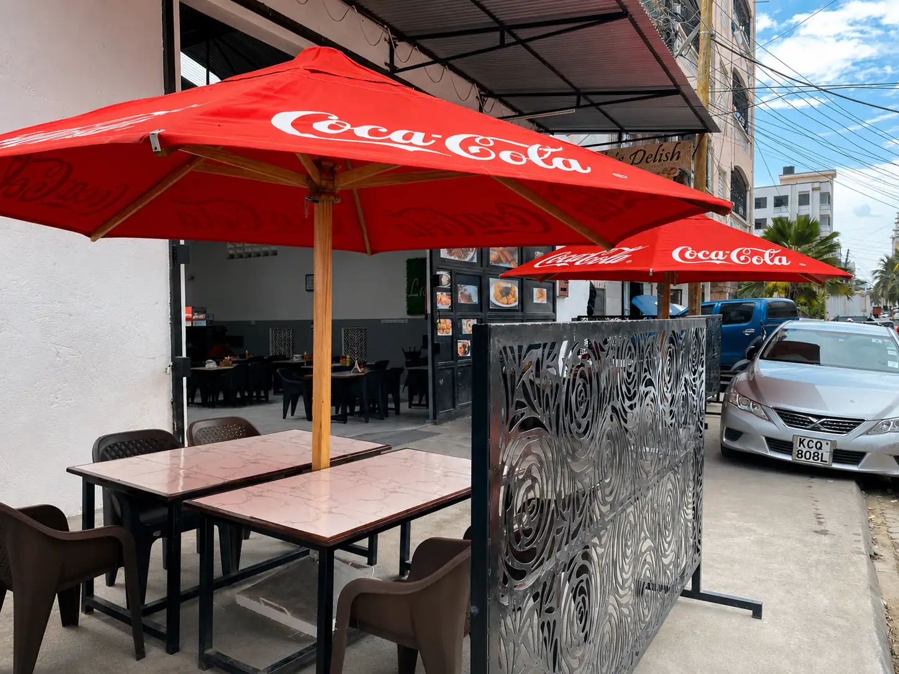
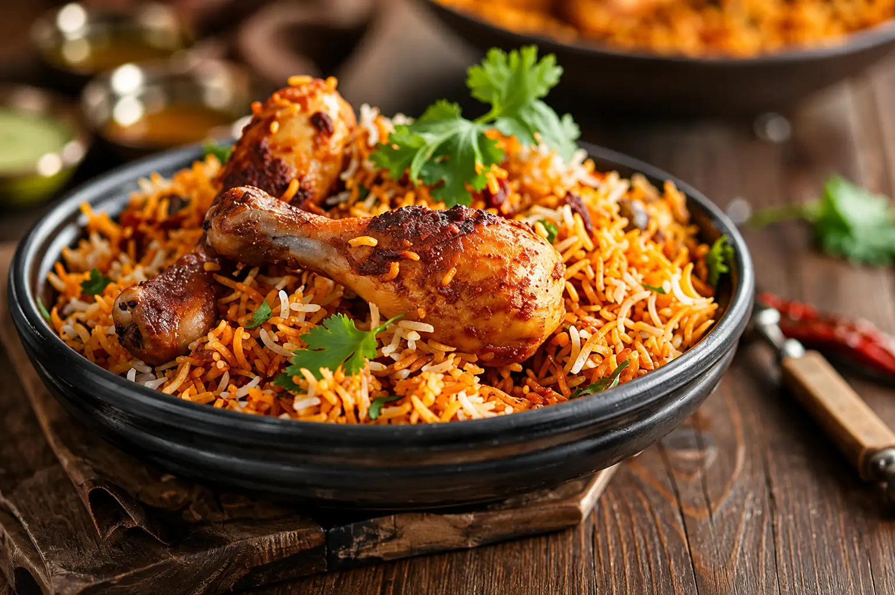
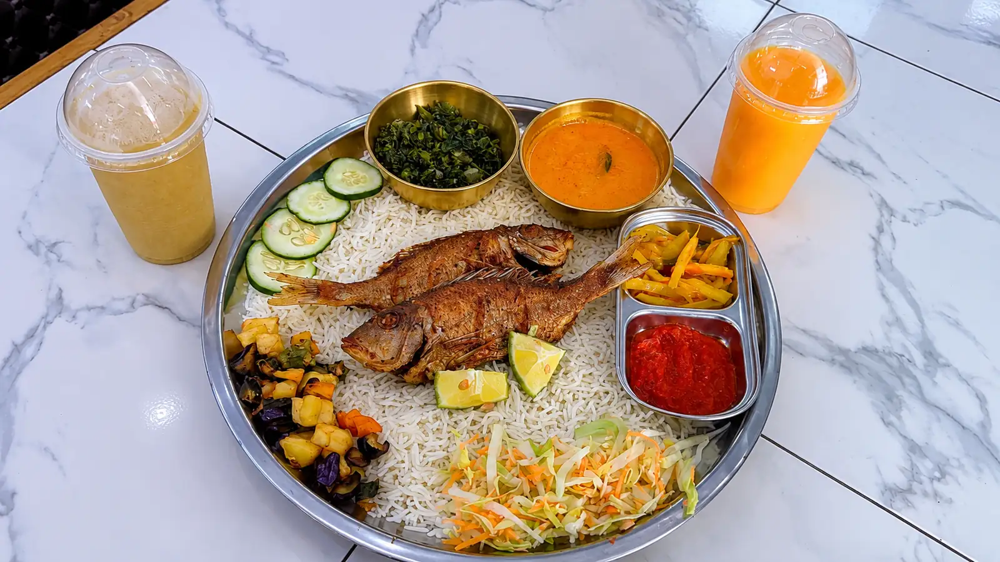
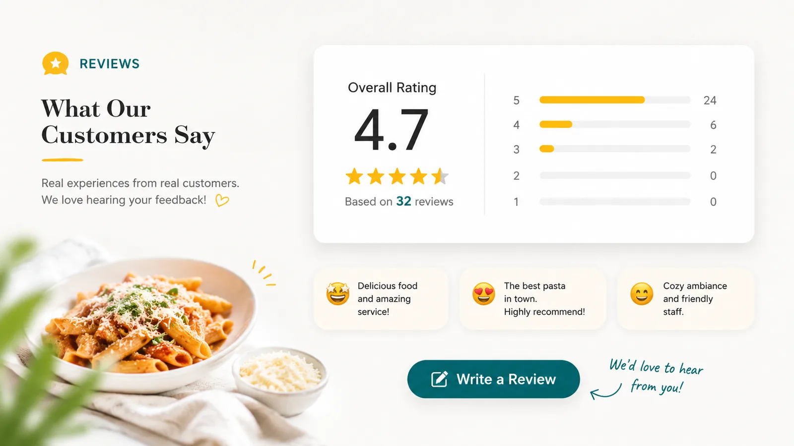

"I absolutely loved the wali wa vitungu and chicken biryani – packed with flavor and cooked to perfection! Paired with a cold passion juice, it was the perfect combo. I can't wait for the next time I'm in Mombasa just so I can visit Lulu’s Delish again. The place is super clean, the service is excellent, and you’ve definitely won a loyal customer. Highly recommended!"
Lulu's Delish
Good food, made
for sharing.
A family restaurant in Majengo, Mombasa, serving the flavours of the coast with generous portions, familiar hospitality, and food worth coming back for.


What we serve
Flavours from the coast.
Lulu's Delish is rooted in the food people know and love along the Kenyan coast. From mahamri and mbaazi in the morning to biryani, pilau, onion rice and mutton mandi, the menu brings together everyday favourites and dishes made for a proper meal.
We keep the food generous and straightforward. Coastal spices, coconut, slow-cooked meats, fresh juices and familiar sides come together in portions meant to satisfy rather than impress for the sake of it.
Explore the menu
The experience
Come hungry.
Leave satisfied.
Lulu's Delish is the kind of place where breakfast can turn into a full meal and a quick visit can become a reason to stay a little longer.
Whether you're stopping in for morning soup and chapati, picking up lunch, or bringing people together over a platter, the focus is simple: good food and friendly service.
Reviews
What people say.

Find us in Mombasa
Come by for a plate.
You'll find Lulu's Delish along Narok Road in Majengo. Dine in, pick up your order, or call ahead if you're feeding a group.